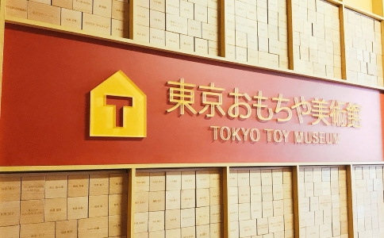
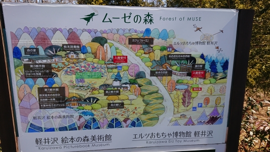

3年春休み
―研究したいテーマ-
製品開発・・・おもちゃ開発
―きっかけ―
赤ちゃんから始める英語教育や～歳で子どもの脳は決まるといった本などをよく見かけるようになり、
実際に効果があるのか疑問を抱いた。疑問を抱いたその当時、将棋棋士の藤井聡太さんが小さいころ遊んだおもちゃとしてキュロボという木製の知育玩具について取り上げられていた。
それを見て、小さいころ必ず触れるものはおもちゃであり、だれもがおもちゃを通して何かを学んできたのではないかと考えた。
早期教育とおもちゃで遊ぶ経験のどちらが重要であるかに興味を持った。
ー早期教育ー
論文 早期教育について 長尾 みゆき・ 村上 昌美 ・元木 順（2011）
内容
・日本での早期教育は「超早期教育」と「幼児・就学前教育」の2つをさすことが多く、教育内容は知育重視型・芸術志向型・習い事型の3つに分類される
・世界の早期教育として非英語圏全域で義務教育として英語教育の開始年齢が前倒しされる傾向により、どの国の保護者も早くから子供に英語教育を受けさせようとしている
・早期教育は誕生後が多くのものを吸収しやすい時期であり、脳を鍛える・脳の発達を促進させるという観点から行われている
・早期教育の利点として質の高い早期教育は子供の認知技能、言語能力、情緒的・社会的な発達を促す大きな可能性を秘めており、将来の地位の確立に役立っている
・早期教育の問題点は子供が自発的に作り上げていく遊びがなくなり、パターン化された教育が子どもの心理や人格形成へ影響を及ぼすこと、経済面や家族関係の面で社会問題にまで発展している事例もある
見解
・論文から早期教育の効果は明らかにはなっていないが、理にかなっていることを行っていることが分かった
・早期教育の質のいいものは子供の可能性を広げるものであるが、質の高い教育を求めることによって、家族関係の面などで影響が起きてしまえば本当に子供のためになるといえるのだろうか
・早期教育のデメリットとして挙げられた子供が自発的に作り上げていく遊びというものを支えるのはおもちゃではないかと考えたため、おもちゃについて調べていくことにした
ー春休み中行ったところー
東京おもちゃ美術館

分析
・グットトイを受賞したおもちゃを多く展示してある
・昔ながらのおもちゃや手作りのおもちゃなど幅広く展示してあり、実際に遊べるようになっていた
・グットトイを受賞していたものの多くは木製のものが多く、シンプルな遊び方をするものが多かった
エルツおもちゃ博物館（軽井沢）

分析
・伝統的なおもちゃが展示されている
・くるみ割り人形や季節を限定され、見て楽しむようなおもちゃが多かった
・木製のおもちゃが大半を占めていた
まとめ
・エルツおもちゃ博物館では木製のおもちゃの可能性を感じることができた
・東京おもちゃ美術館で見たグットトイに木製おもちゃが多かったので理由を調べていく
―木育―
木製おもちゃが多い理由を調査したら、木育というものに注目が集まっていることが分かった
概要
・木育は幼児期から原体験としての木材との関わりを深め、豊かな暮らし,社会,森づくりに貢献する市民の育成をめざす活動である
・木育は触れる・創る・知るの３つのステップがあり、これらは基本的な流れや計画の方向性を示すものである
・森林や環境問題に対する確かな理解の基礎を育むもの
参考文献 Ⅰ「木育」のねらいと必要性
木育の目的が分かり、木製のおもちゃを作ってみたいと思い、相模原にあるMORIMOという間伐材を利用している企業へ訪問
―訪問―
MORIMOに訪問してみて話を伺ってみるとファーストトイという子供が初めて持つおもちゃを出産祝いとして市から贈呈してもらうという企画があるそうで、何種類か案を考えてほしいといわれ、MORIMOと一緒に活動していきたいと考えている
ー目標ー
小目標
MORIMOと一緒にファーストトイの作成
大目標
Fabでプロトタイプまで作成し商品として社会に出す
ー今後の予定ー
おもちゃの役割などを論文で調査